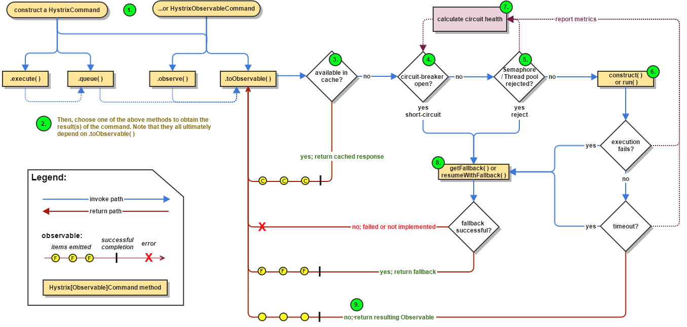

Spring Cloud 屏蔽了复杂的配置和实现原理，提供了一套完整的微服务解决方案，开发者可以很轻松地构建一个分布式系统。文章对 Spring Cloud 的基本概念、原理和开发过程做了总结，借由此文，大家能对 Spring Cloud 有更加清晰的认知。
What is Spring Cloud?
Spring Cloud是一系列框架的集合。众所周知，Spring Boot对Spring框架做了极大的简化，让开发者摆脱了繁杂冗余的配置。而Spring Cloud则搭上Spring Boot这趟便车，让分布式微服务的开发变得简单。许多基础设施服务，如服务注册与发现、服务网关、负载均衡、断路器等，都可以像Spring Boot一样轻松启动和部署。
Spring Cloud的基本组件
Spring Cloud组合了目前比较成熟的框架，屏蔽了复杂的配置和底层实现，封装成简单易用的接口，以供开发者使用。主要有：
Eureka。服务中心，提供了服务的注册和发现机制。Zuul。服务网关，客户端请求的统一入口，能进行请求的过滤与服务的路由。Ribbon。服务调用，提供了负载均衡支持以及服务名到IP与端口的映射。Feign。简化服务调用，消费者可以通过接口的形式进行服务的消费。Hystrix。断路器，解决服务雪崩问题，为系统提供较更高的可靠性。
Eureka
What is Eureka?

组件调用关系
服务提供者(Eureka Client)
- 启动后，向注册中心发起
register请求，将服务注册到上面。 - 在运行过程中，定时向注册中心发送
renew心跳，以证明服务可用。 - 停止服务提供者，向注册中心发起
cancel请求，清空当前服务注册信息。
服务消费者(Eureka Client)
- 启动后，从注册中心拉取服务注册信息。
- 在运行过程中，定时更新服务注册信息。
- 服务消费者发起远程调用。
注册中心(Eureka Server)
- 启动后，从其他节点拉取服务注册信息。
- 运行过程中，定时运行
evict任务，剔除没有按时renew的服务（包括非正常停止和网络故障的服务）。 - 运行过程中，接收到的
register、renew、cancel请求，都会同步至其他注册中心节点。
Zuul
What is Zuul?

应用场景
一个请求会先按顺序通过所有的前置过滤器，之后在路由过滤器中转发给后端应用，得到响应后又会通过所有的后置过滤器，最后响应给客户端。在整个流程中如果发生了异常则会跳转到错误过滤器中。
一般来说，如果需要在请求到达后端应用前就进行处理的话，会选择前置过滤器，例如鉴权、请求转发、增加请求参数等行为。在请求完成后需要处理的操作放在后置过滤器中完成，例如统计返回值和调用时间、记录日志、增加跨域头等行为。路由过滤器一般只需要选择 Zuul 中内置的即可，错误过滤器一般只需要一个，这样可以在 Gateway 遇到错误逻辑时直接抛出异常中断流程，并直接统一处理返回结果。
前置过滤器
- 权限鉴定。请求来源可能很广，不是所有请求都会被处理，每一种资源的使用都需要一定的权限。
- 流量转发。将指向某个资源的请求(
/path1/index1.html)，转向另外一个资源(/path2/index2.html)的请求。
后置过滤器
- 跨域。
- 对于任意的
Ajax请求，返回Access-Control-Allow-Origin为*，且Access-Control-Allow-Credentials为true，这是一个常用的允许任意源跨域的配置，但是不允许请求携带任何Cookie。 - 如果一个被信任的请求者需要携带
Cookie，那么将它的Origin增加到白名单中。对于白名单中的请求，返回Access-Control-Allow-Origin为该域名，且Access-Control-Allow-Credentials为true，这样请求者可以正常的请求接口，同时可以在请求接口时携带Cookie。 - 对于
302的请求，即使在白名单内也必须要设置Access-Control-Allow-Origin为*，否则重定向后的请求携带的Origin会为null，有可能会导致iOS低版本的某些兼容问题。
- 对于任意的
- 统计。将请求的情况(日志，
access log)做个记录，以便日后分析。
错误过滤器
错误过滤器的主要用法就像是 Jersey 中的 ExceptionMapper 或是 Spring MVC 中的 @ExceptionHandler 一样，在处理流程中认为有问题时，直接抛出统一的异常，错误过滤器捕获到这个异常后，就可以统一的进行返回值的封装，并直接结束该请求。
Ribbon


在微服务架构中，我们将不得不开发许多微服务，并且每个微服务在生态系统中可能具有多个实例。为了克服这种复杂性，我们已经有了使用服务发现模式的流行解决方案。如果一个微服务要与另一个微服务进行通信，则通常会使用发现客户端查找服务注册表，并且Eureka服务器将该目标微服务的所有实例返回给调用者服务。然后，调用者服务负责选择要发送请求的实例。在这里，客户端负载平衡它会自动处理这种情况下的复杂性，并以负载平衡的方式委派给适当的实例。我们还可以指定要使用的负载平衡算法。

Feign
What is Feign？

HttpMessageConverters used by default in Spring Web. Spring Cloud integrates Ribbon and Eureka to provide a load balanced http client when using Feign.Hystrix
Whta is Hystrix？

雪崩效应
分布式系统环境下，服务间类似依赖非常常见，一个业务调用通常依赖多个基础服务。对于同步调用，当服务提供者A不可用时，相应的服务消费者B请求线程被阻塞，导致不可用。当有大批量请求调用A服务时，最终可能导致整个B服务资源耗尽，无法继续对外提供服务。并且这种不可用可能沿请求调用链向上传递，因此可能出现某个基础服务不可用而造成整个系统不可用的情况，这种现象被称为雪崩效应。
当所有服务都正常运作时，服务之间调用不会产生问题。

当某个服务变为不可用时，可能导致调用该服务的请求被阻塞。

当一个服务的所有请求都阻塞时，服务消费者变为不可用。

类似的情况会往上继续传播，最终可能导致整个系统瘫痪。
解决方案
Hystrix解决的核心问题就是服务雪崩。Hystrix内部的解决方案如下图所示。

具体的流程为：
- 构造一个
HystrixCommand或HystrixObservableCommand对象，用于封装请求，并在构造方法配置请求被执行需要的参数； - 执行命令。
Hystrix提供了4种执行命令的方法； - 判断是否使用缓存响应请求，若启用了缓存，且缓存可用，直接使用缓存响应请求。
Hystrix支持请求缓存，但需要用户自定义启动； - 判断熔断器是否打开，如果打开，跳到第8步；
- 判断线程池/队列/信号量是否已满，已满则跳到第8步；
- 执行
HystrixObservableCommand.construct()或HystrixCommand.run()，如果执行失败或者超时，跳到第8步；否则，跳到第9步； - 统计熔断器监控指标；
- 走
Fallback备用逻辑，, 并将执行结果上报Metrics更新服务健康状况； - 返回请求响应。